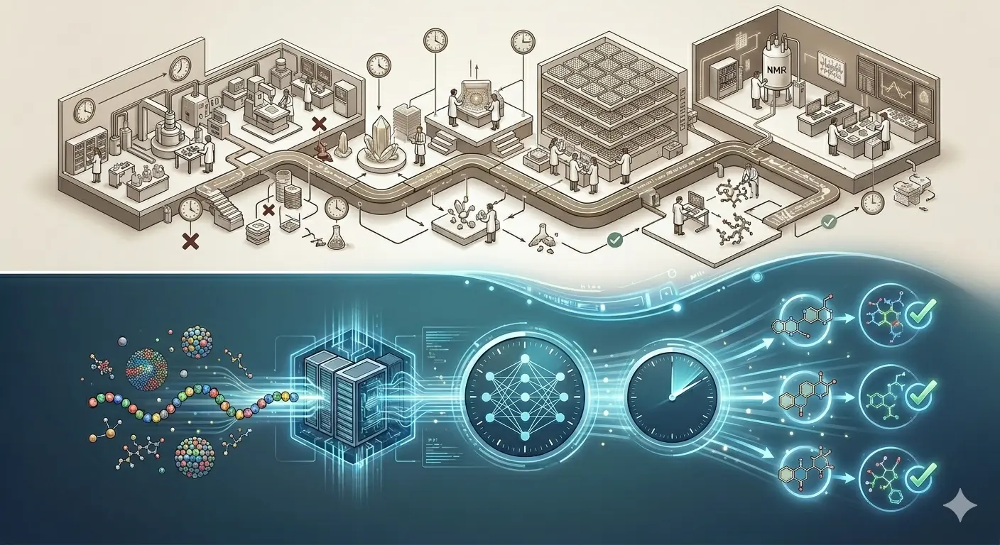
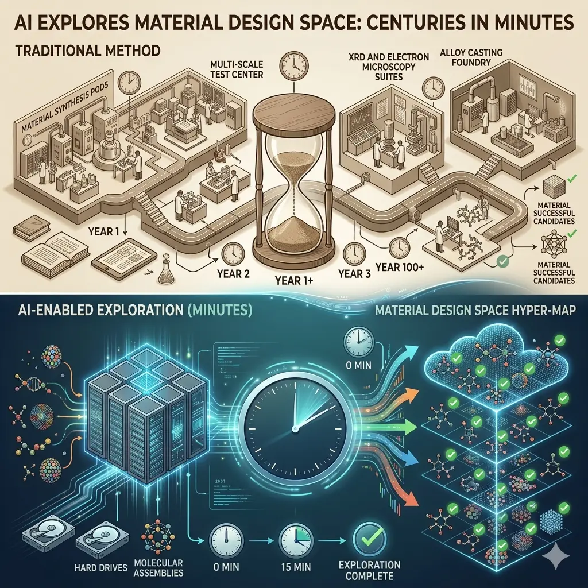
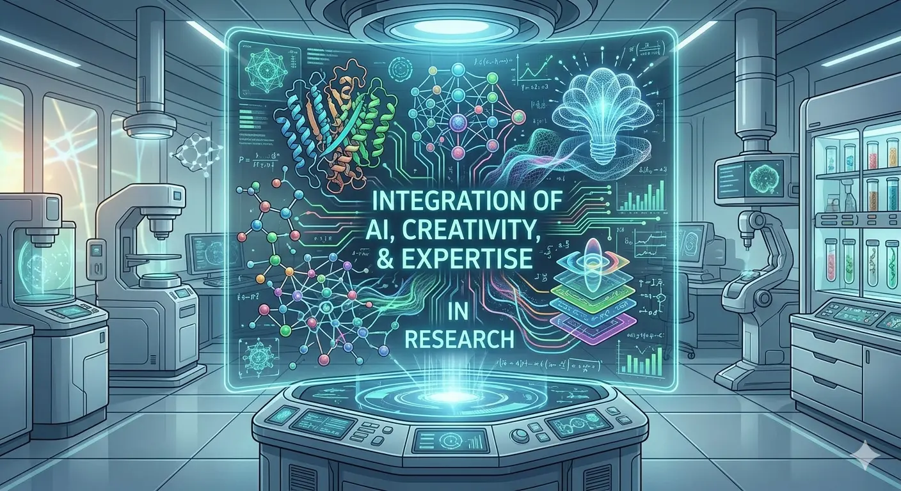

For decades, drug discovery followed a brutal timeline: 10-15 years from initial research to FDA approval, with failure rates exceeding 90% and costs averaging $2.6 billion per successful drug. Materials science moved at similar speeds, with new compounds taking years to synthesize and test.
2026 marks an inflection point. AI-discovered drugs are now moving through Phase II and Phase III clinical trials, compressing timelines from years to months. AlphaFold has generated over 200 million predicted protein structures, fundamentally changing how researchers approach drug design. AI isn't just assisting scientists anymore—it's actively participating in the discovery process itself.
The most transformative AI applications in 2026 aren't chatbots or image generators—they're systems accelerating scientific breakthroughs that will save lives and solve fundamental challenges.
The AlphaFold Revolution: Solving Biology's Prediction Problem
In 2020, DeepMind's AlphaFold solved a 50-year-old grand challenge in biology: predicting protein structure from amino acid sequences. This wasn't incremental progress—it represented a fundamental breakthrough.
Proteins are the workhorses of biology. Understanding their three-dimensional structure is essential for designing drugs, understanding diseases, and engineering biological systems. Traditional methods for determining protein structures—X-ray crystallography, cryo-electron microscopy—are expensive, time-consuming, and frequently fail.

AlphaFold predicts protein structures with atomic-level accuracy in minutes instead of months
From Breakthrough to Widespread Adoption
By 2026, AlphaFold has generated over 200 million predicted protein structures—essentially mapping the structural universe of known proteins. The impact is profound:
- Drug discovery acceleration: Over 50% of AI drug discovery programs now use AlphaFold-predicted structures as starting points
- Target identification: Researchers can rapidly identify which proteins are viable drug targets without years of structural biology work
- Mechanism understanding: Scientists can visualize how proteins interact, revealing disease mechanisms that weren't previously understood
- Antibody design: AlphaFold enables rational antibody design by predicting binding sites with high accuracy
🏆 Nobel Recognition
The 2024 Nobel Prize in Chemistry was awarded to David Baker, Demis Hassabis, and John Jumper for their work in using AI to predict protein structures and design functional proteins—validating AI's transformative role in fundamental science.
This isn't just academic achievement. Companies are building entire drug discovery pipelines around AlphaFold predictions, cutting years from development timelines and identifying targets that would have been impractical to pursue with traditional methods.
AI Drug Discovery: From Hype to Clinical Validation
The pharmaceutical industry has talked about AI-powered drug discovery for years. 2026 is when talk becomes validated results. Multiple AI-discovered drug candidates are now in mid-to-late stage clinical trials, with results that will definitively answer whether AI can deliver drugs that actually work at scale.
The Current Pipeline
As of early 2026, the AI drug discovery pipeline includes:
- 200+ AI-discovered drugs in active development
- 94 candidates in Phase I trials
- 56 candidates in Phase II trials
- 15 candidates in Phase III trials

AI dramatically compresses drug discovery timelines while improving success rates
Success Rates Tell the Story
The most compelling evidence comes from clinical trial success rates:
| Trial Phase | AI-Discovered Drugs | Traditional Methods |
|---|---|---|
| Phase I | 81% success rate | 52% success rate |
| Phase II | 68% success rate | 30-45% success rate |
| Time to Phase II | 18-30 months | 4-6 years |
These aren't marginal improvements. AI-discovered drugs are succeeding at nearly double the rate of traditionally-discovered compounds while reaching clinical trials in a fraction of the time.
Landmark Cases
Several companies are demonstrating what's possible:
-
Insilico Medicine
Brought its AI-discovered drug for idiopathic pulmonary fibrosis from target identification to Phase II clinical trials in under 30 months—a timeline that would typically take 5-7 years. Phase II results expected in mid-2026 will serve as a critical validation point. -
Recursion Pharmaceuticals
REC-994 for cerebral cavernous malformation showed statistically significant reduction in lesion growth in Phase II results. The drug was identified through AI analysis of millions of cellular images. -
Isomorphic Labs
Google DeepMind's drug discovery spinoff secured over $600M in funding for AlphaFold-integrated drug design, with partnerships across major pharmaceutical companies.
How AI Transforms the Discovery Process
AI doesn't just speed up existing workflows—it enables fundamentally different approaches to drug discovery and materials science. Understanding how this works helps clarify why the results are so dramatic.
Stage 1: Target Identification
Traditional approach: Screen through literature, conduct experiments, spend 2-3 years identifying viable protein targets for a disease.
AI approach: Analyze genomic data, protein interaction networks, disease pathways, and existing research to identify promising targets in weeks. AlphaFold predicts target structure immediately, enabling rational drug design from the start.
Stage 2: Molecule Generation
Traditional approach: Medicinal chemists design molecules based on experience and intuition, synthesize candidates, test iteratively. Each cycle takes months.
AI approach: Generative models explore millions of potential molecular structures, predicting binding affinity, toxicity, and drug-like properties before synthesis. Only the most promising candidates move to lab testing.
Stage 3: Optimization
Traditional approach: Modify lead compounds through trial and error, test each variant. Hundreds of iterations over years.
AI approach: Predict how modifications will affect binding, toxicity, bioavailability, and metabolism before synthesis. Converge on optimized compounds with far fewer experimental cycles.
💡 Why This Matters
The traditional drug discovery process fails primarily because most compounds don't work or are too toxic. AI dramatically improves the hit rate by eliminating unlikely candidates computationally before expensive synthesis and testing. This fundamentally changes the economics and timelines of pharmaceutical R&D.
Beyond Pharma: Materials Science and Research
While drug discovery captures headlines, AI is transforming scientific discovery across disciplines:
Materials Science
AI models predict material properties—strength, conductivity, thermal characteristics—from atomic composition, enabling rapid discovery of:
- Battery materials: AI-identified lithium-ion alternatives showing 30% better energy density
- Catalysts: Computational screening identifying efficient catalysts for carbon capture and clean energy
- Superconductors: AI analysis leading to discovery of near-room-temperature superconducting materials
- Polymers: Novel plastics with specific biodegradability and strength characteristics designed computationally
Climate and Energy Research
AI accelerates research into climate solutions:
- Carbon capture materials optimized through generative AI
- Solar cell efficiency improvements from AI-designed compounds
- Nuclear fusion reactor optimization through AI-driven simulation
- Agricultural yield improvements from AI analysis of crop genetics

AI enables exploration of material design space that would take centuries using traditional methods
Fundamental Physics and Chemistry
AI isn't just applying existing knowledge—it's actively participating in discovery:
- Hypothesis generation: AI analyzes massive datasets to propose novel hypotheses for experimental validation
- Experiment design: AI determines optimal experimental parameters to test theories efficiently
- Data analysis: Pattern recognition in experimental data revealing insights humans would miss
- Simulation acceleration: Quantum chemistry calculations that took weeks now complete in hours
The Investment and Market Landscape
The shift from experimental to proven technology is attracting significant capital and corporate commitment:
Funding Trends
- AI drug discovery sector drew $3.3 billion in venture funding in 2024
- AI in pharmaceuticals market valued at $1.8 billion in 2023, projected to reach $13.1 billion by 2030
- Major pharmaceutical companies establishing dedicated AI research divisions
- Isomorphic Labs secured $600M+ for AlphaFold-integrated drug design
Big Pharma Integration
Pharmaceutical giants are no longer watching from the sidelines—they're actively integrating AI into core R&D:
- Pfizer, Roche, and Novartis establishing multi-year partnerships with AI drug discovery platforms
- In-house AI research teams growing from experimental groups to core functions
- Joint ventures combining pharmaceutical expertise with computational capabilities
- Acquisition of AI-first biotech companies by traditional pharma
Regulatory Framework: FDA Adapts to AI
Regulation is catching up to innovation. The FDA released draft guidance in 2025 on the use of AI to support regulatory decision-making for drug and biological products, introducing a risk-based framework for model credibility.
Key Regulatory Principles
- Model transparency: AI models must be explainable and interpretable for regulatory review
- Validation requirements: Computational predictions require experimental validation at critical decision points
- Risk-based assessment: Higher scrutiny for AI-driven decisions with greater clinical impact
- Continuous monitoring: Post-approval monitoring of AI-discovered drugs to validate computational predictions
This regulatory clarity reduces uncertainty and enables companies to invest confidently in AI-powered drug development with defined paths to approval.
⚠️ Important Reality Check
AI accelerates discovery and optimization, but clinical trial duration, regulatory review timelines, and manufacturing scale-up remain largely unchanged. A drug still needs to prove safety and efficacy in humans—AI can't shortcut that fundamental requirement. The timeline compression comes from better target selection and molecule optimization, not faster trials.
Challenges and Limitations
AI-powered scientific discovery is transformative but not without significant challenges:
The Data Quality Problem
AI models are only as good as their training data. Biases in historical data propagate into AI predictions. Incomplete datasets limit what AI can discover. High-quality experimental data remains essential and often scarce.
The Interpretability Challenge
Deep learning models can identify promising drug candidates but often can't explain why they work. This black-box problem creates challenges for:
- Regulatory approval requiring mechanistic understanding
- Troubleshooting when predictions fail
- Gaining scientific insight beyond specific predictions
- Building trust among researchers and clinicians
Clinical Translation Risk
Computational predictions must translate to biological reality. The most consequential development of 2026 will be Phase III results that determine whether AI can deliver drugs that actually work at scale. Some AI-predicted compounds that looked promising in silico have failed in clinical trials.
Cost and Expertise Requirements
Implementing AI drug discovery requires:
- Significant computational infrastructure
- Interdisciplinary teams (computational biologists, data scientists, medicinal chemists)
- High-quality training data and experimental validation capabilities
- Integration with existing pharmaceutical R&D workflows
These barriers mean AI drug discovery remains accessible primarily to well-funded organizations, though cloud platforms and partnerships are democratizing access.
Real-World Implementation: What Works
Organizations successfully implementing AI in scientific research share common patterns:
Start with Clear, Narrow Problems
Don't try to revolutionize entire research programs immediately. Target specific bottlenecks:
- Use AlphaFold for structure prediction before pursuing expensive experimental methods
- Apply AI to screen compound libraries computationally before synthesis
- Automate literature review and hypothesis generation for specific research questions
- Optimize experimental parameters through AI-driven design of experiments
Maintain Human-AI Collaboration
The most successful programs treat AI as a research partner, not a replacement:
- AI proposes: Generates hypotheses, candidate molecules, experimental designs
- Humans validate: Apply domain expertise to filter AI suggestions
- Experiments confirm: Lab work validates or refutes computational predictions
- Feedback improves: Results train better models for next iteration
💡 The Hybrid Approach
Research teams seeing the best results combine AI capabilities (rapid exploration of vast possibility spaces) with human expertise (deep domain knowledge, intuition about what's feasible, experimental skill). Neither alone achieves what the combination enables.
Invest in Data Infrastructure
AI quality depends on data quality. Successful organizations:
- Standardize experimental data collection and storage
- Build comprehensive databases of historical results
- Implement electronic lab notebooks with structured data
- Collaborate to pool datasets when competitive concerns allow
Looking Forward: The Next Breakthroughs
2026 is just the beginning. Several developments will define the next phase:
Personalized Medicine
AI analyzing individual patient genomics, proteomics, and health data to design personalized therapies. Instead of one-size-fits-all drugs, treatments optimized for genetic profiles and disease characteristics.
Multi-Target Drug Design
Complex diseases like cancer and Alzheimer's require hitting multiple targets simultaneously. AI can design molecules that interact with multiple proteins in coordinated ways—a challenge too complex for traditional medicinal chemistry.
Automated Laboratories
AI-designed experiments executed by robotic lab systems, creating closed-loop discovery where AI proposes, robots synthesize and test, and results immediately inform the next iteration. Some pharmaceutical companies are already building these "self-driving labs."
Cross-Disciplinary Discovery
AI models trained on data from multiple scientific domains identifying connections humans wouldn't recognize. A cancer drug mechanism suggesting a treatment for neurological disease. Materials science insights applied to biological systems.

The future of scientific research combines AI capabilities with human creativity and domain expertise
Implications for Organizations and Researchers
The acceleration of AI-powered discovery creates both opportunities and imperatives:
For Pharmaceutical and Biotech Companies
- Competitive necessity: Companies not integrating AI risk falling behind competitors who can discover and optimize drugs faster
- Talent requirements: Need for computational biologists and data scientists alongside traditional chemists and biologists
- Partnership opportunities: Collaborate with AI platforms rather than building everything in-house
- Portfolio strategy: AI enables pursuing targets and indications that were previously economically infeasible
For Academic Research
- Democratization: Cloud-based AI tools make capabilities previously available only to large labs accessible to smaller research groups
- Interdisciplinary collaboration: Success requires partnerships between experimental scientists and computational researchers
- Publication and credit: Establishing norms for crediting AI contributions to discoveries
- Training the next generation: Scientists need both domain expertise and computational literacy
For Healthcare Systems
- Faster access to treatments: Compressed timelines mean patients access new therapies years sooner
- Economic impact: More efficient discovery could reduce drug development costs, though pricing dynamics remain complex
- Rare disease opportunity: AI makes economically viable the development of drugs for smaller patient populations
The Broader Impact
AI-powered scientific discovery extends beyond business strategy and research methodology. It represents a fundamental shift in how humanity approaches knowledge creation and problem-solving.
We're transitioning from AI that helps us find information to AI that helps us discover knowledge—from search to synthesis, from retrieval to revelation.
The implications are profound:
- Accelerated innovation: Problems that would have taken decades to solve might yield to solutions in years
- Democratized expertise: Sophisticated analytical capabilities accessible to researchers worldwide
- New research paradigms: Computational exploration of possibility space before experimental validation
- Cross-pollination: Insights from one domain rapidly applicable to others through AI-identified connections
2026 marks the year AI-powered discovery moves from promising technology to proven capability. The clinical trial results arriving throughout the year will validate—or challenge—the optimism surrounding AI drug discovery. Materials breakthroughs will demonstrate whether computational design translates to real-world performance.
What's certain: the organizations, researchers, and institutions that effectively integrate AI into their discovery processes will lead their fields. Those that don't will find themselves struggling to keep pace with competitors who can explore possibility spaces and converge on solutions at unprecedented speed.
The question isn't whether AI will transform scientific discovery—it already has. The question is how quickly organizations will adapt their processes, build the necessary capabilities, and capitalize on the opportunities this transformation creates.